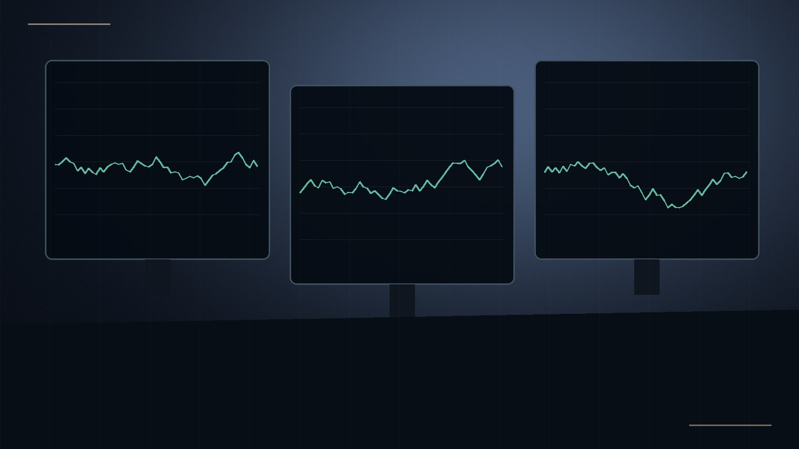

Market workspace
Interactive charts, watchlists and screeners.
A dedicated workspace for financial analysis, portfolio research and historical trading simulation. Explore the past. Build your own perspective.
Chart, compare and explore market data in a focused environment. Try the interactive illustrative preview below.
Interactive charts, watchlists and screeners.
Advance through imported price history and simulate orders.
Track allocations, returns and drawdown.
Import CSV, manage datasets and back up your workspace.
Explore the context of financial turning points. Import historical data and replay decisions without putting real capital at risk.
A period of severe financial disruption and sharply changing risk sentiment.

Explore moving-average strategies, historical returns and risk measures.
Compare market performance and investigate correlations using your datasets.
Local profiles, local storage and an offline-capable workflow.
Desktop and mobile targets with platform-specific availability. Only published release files can be downloaded.
Everything you need before you install.
Target platforms: Windows x64, macOS, Android, iPhone and iPad. Specific OS requirements and available architectures will accompany each tested release.
FinScope includes clearly labelled sample datasets, CSV import and ECB historical reference exchange-rate support. Reference rates are not intraday OHLC prices or live quotes.
No. Trading is a local simulation for education and research. Past results do not predict future performance.
Profiles are stored on the device. Google and phone verification are clearly labelled simulations, not real authentication services. Use fictional contact details and a unique local password.
Public iOS distribution requires signed builds and a distribution channel such as TestFlight. Availability is shown only when a verified link is supplied.
Open GitHub Issues ↗ with your operating system, application version and steps to reproduce.